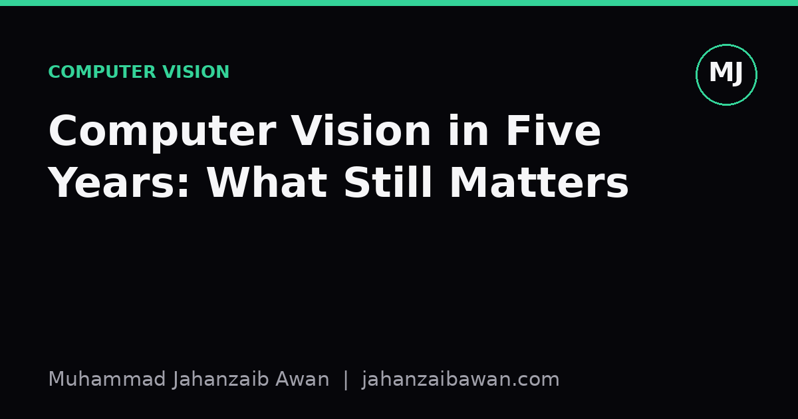
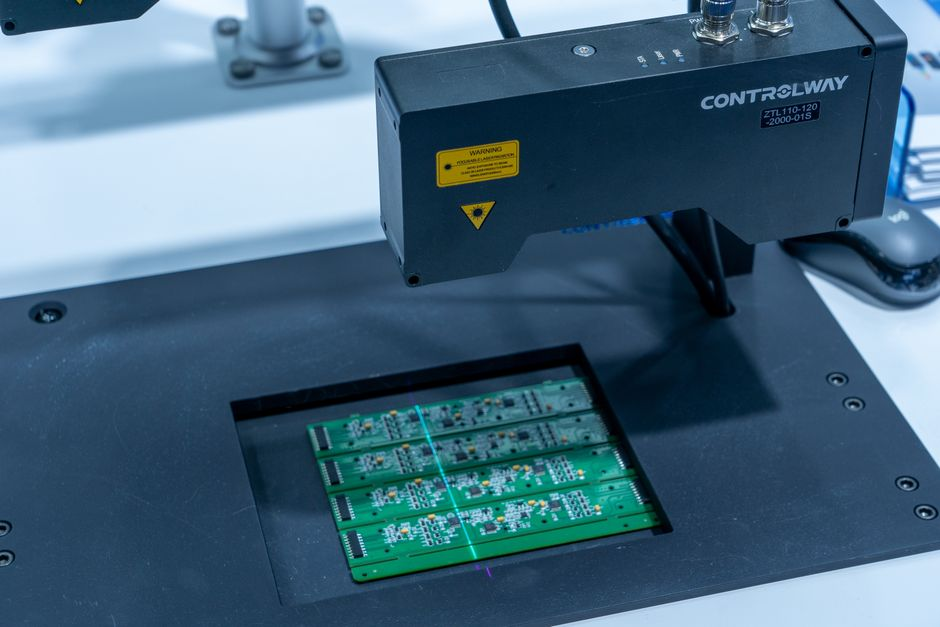

Computer Vision in Five Years: What Still Matters
Architectures will keep changing, but the habits that make a vision system trustworthy are far more durable than any backbone network.

Why the backbone you learn today will not save you tomorrow
Every few years, computer vision gets a new headline architecture, and every few years someone writes a post claiming the field has finally stabilised. It never has. I have seen convolutional networks treated as permanent infrastructure, then watched attention-based architectures take over benchmark leaderboards, then watched hybrid designs and ever larger pretraining recipes reshuffle the rankings again. If you built your identity around one architecture family, you spent a lot of energy relearning things that were never the point.
The point, if there is one, is that architectures are a means of extracting useful representations from pixels, and the mechanism for doing that extraction is genuinely an engineering detail. What does not change is the shape of the problem underneath: you have a finite, imperfect sample of images, a task definition that is usually fuzzier than it looks, and a deployment environment that will differ from your training distribution in ways you cannot fully anticipate. Those three facts are where the durable skills live.
I say this as someone who is still learning the field, not as someone looking back from a position of authority. But the pattern is visible even over a short horizon: papers that introduced a clever layer are cited less each year, while papers about evaluation protocols, dataset bias, or benchmark construction keep getting referenced because the problems they describe never fully go away. That is a useful signal about where to put study time.
Data discipline: the unglamorous skill that pays compounding interest
Consider a defect-detection system for a manufacturing line, trained on ten thousand images of parts labelled as acceptable or defective. If nine thousand of those images came from one factory shift and one camera angle, the model will look excellent on a held-out split drawn from the same shift, and then underperform once deployed across three other lines with different lighting rigs. This is not an exotic failure mode; it is closer to the default outcome unless someone deliberately checks for it.
The skill that prevents this is not a modelling trick. It is the habit of asking, before training even starts, how the images were collected, who labelled them, and whether the split boundaries respect real-world groupings such as camera, batch, date, or physical unit. A model evaluated on a split that shares a camera or a production batch with the training set is not being evaluated on generalisation at all; it is being evaluated on memorisation of conditions that happen to recur. I treat this as the single highest-leverage check in any vision project, because it is cheap to do and catastrophic to skip.
Worked through with numbers: suppose a classifier achieves 97 percent accuracy on a random split but only 84 percent on a split held out by factory site. That thirteen-point gap is not noise, it is the model quietly encoding site-specific cues, perhaps a watermark, a consistent background colour, or a camera's particular noise profile, rather than the defect itself. Five years from now, whatever architecture is fashionable, this gap will still be the thing that determines whether a system survives contact with the real world. Data discipline, including careful de-duplication, leakage-aware splitting, and honest documentation of collection conditions, is a skill that transfers across every future model generation because it addresses the sample, not the mechanism.

Strong baselines and evaluation rigour as a permanent discipline
A second evergreen skill is the instinct to build a strong, boring baseline before reaching for anything sophisticated. If a new segmentation method reports a two-point improvement in mean intersection over union, that number is meaningless on its own. It only becomes meaningful once you know what a careful baseline, trained with the same augmentation budget, the same number of epochs, and the same hyperparameter search effort, actually achieves. I have seen reported gains shrink or vanish entirely once the baseline is given a fair chance, simply because the original baseline was under-tuned.
This matters practically because teams routinely adopt complex architectures to chase marginal gains that a properly tuned simpler model would have matched. Suppose a lightweight convolutional classifier, trained with standard augmentation and a well-tuned learning rate schedule, reaches 91.2 percent top-one accuracy on a held-out test set, and a much larger transformer-based model reaches 91.8 percent after far more compute and training time. In a latency-constrained deployment, that half-point gain is rarely worth the tenfold increase in inference cost. Knowing how to make that trade-off, and having the discipline to actually measure it rather than assume the fancier model wins, is a skill that will apply regardless of what the state of the art looks like in five years.
Evaluation rigour extends to the metrics themselves. Accuracy alone can hide a model that performs well on a majority class and poorly on a rare but operationally critical one, such as a rare defect type or a minority demographic group in a face analysis system. Reporting per-class precision and recall, confusion matrices, and calibration curves rather than a single aggregate number is unglamorous work, but it is the difference between a model that looks good in a report and one that behaves predictably in production. This discipline does not depend on which neural network layer is fashionable this year.
Error analysis as the habit that outlives every framework
The final evergreen skill is the willingness to sit with a model's mistakes rather than simply retraining and hoping the next run is better. Pulling fifty misclassified images, grouping them by apparent cause, lighting, occlusion, unusual pose, ambiguous ground truth, and writing down what you see, is slow and not particularly satisfying, but it routinely surfaces issues that no amount of architecture tuning would fix. A model that keeps failing on images with strong backlighting has a data problem, not an architecture problem, and no amount of extra training compute will resolve that.
This kind of structured error analysis also protects you from a subtler trap: optimising against a flawed label set. If, on inspection, fifteen of fifty errors turn out to be mislabelled ground truth rather than genuine model failures, that changes the entire interpretation of your reported accuracy and tells you where to spend the next week of annotation effort, not model development effort. These are judgement calls that require sitting with the actual images, not just the summary statistics, and that habit of looking does not expire when the next architecture arrives.
My practical takeaway, for anyone starting out in computer vision today, is to spend proportionally more time than feels comfortable on data auditing, leakage-aware evaluation, and honest baseline comparisons, and treat architecture choice as the easiest, most replaceable part of the pipeline. The specific libraries and model families you learn this year will be superseded. The instinct to question your split, distrust a suspiciously clean result, and read your own errors carefully will still be exactly what separates a reliable system from an impressive demo in five years' time.